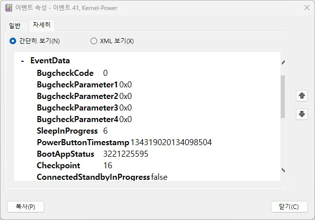
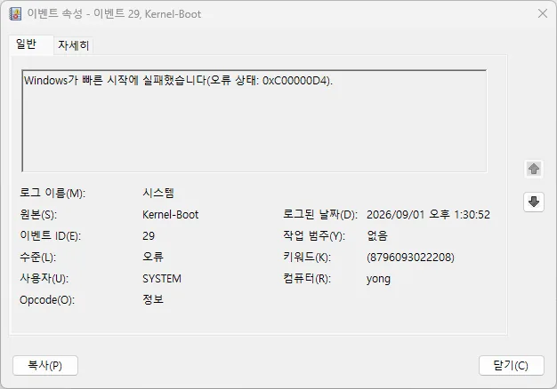

에러 코드 상세
최신 대기 모드 절전 복귀 실패 · 최신 대기 모드(Modern Standby/S0ix)에서 절전 복귀 실패
전통적인 S3 절전 대신 최신 대기 모드(Modern Standby)를 쓰는 노트북에서, 화면을 닫았다 열어도 화면이 켜지지 않거나 배터리가 절전 중에도 빠르게 소모되는 증상입니다. 일반 절전 복귀 실패와 원인 계층이 다릅니다.
이 코드를 어떻게 해석해야 하나요?
오류 코드 자체가 고장난 부품을 확정 짓는 것은 아니며, 발생 시점과 함께 원인 후보를 좁히는 단서로 활용해야 합니다. 최근 변경 사항, 반복되는 조건, 안전 모드에서의 재현 여부를 함께 기록해두세요.
먼저 기록할 내용: 최신 대기 모드 절전 복귀 실패가 발생한 시각, 직전에 실행한 작업, 최근 설치한 드라이버·업데이트, 재부팅 뒤 같은 코드가 반복되는지를 적어 두세요.
가능성 높은 원인
- 최신 대기 모드 지원 드라이버(네트워크, 그래픽)가 최신이 아닌 경우
- 백그라운드 앱이 절전 중에도 계속 깨어있어 완전한 저전력 상태로 못 들어가는 경우
- 제조사의 전원 관리 유틸리티와 Windows 전원 옵션이 충돌하는 경우
- USB 장치나 무선 마우스·키보드가 깨우기 권한(Wake Timer)을 갖고 있어 절전 복귀를 계속 유발하는 경우
첫 점검 항목
- 최신 대기 모드 지원 확인 — 명령 프롬프트에서
powercfg /a로 최신 대기 모드가 실제로 지원되는지 확인하세요. - 절전 중 깨어난 원인 확인 —
powercfg /sleepstudy보고서로 절전 중 어떤 이벤트가 반복해서 깨웠는지 확인하세요. - 드라이버 업데이트 — 네트워크 어댑터와 칩셋 드라이버를 최신 버전으로 업데이트하세요.
- 제조사 전원 유틸리티 확인 — 제조사 전원 관리 유틸리티가 최신인지 확인하세요.
- 깨우기 권한이 있는 장치 확인 —
powercfg /devicequery wake_armed로 절전을 깨울 수 있는 장치 목록을 확인하고, 불필요한 장치는 장치 관리자 → 전원 관리 탭에서 "이 장치로 컴퓨터의 대기 모드를 종료할 수 있음" 체크를 해제하세요.
확인 결과에 따른 다음 단계
- powercfg /a에서 최신 대기 모드 자체가 지원되지 않는다고 나올 때 — 하드웨어 제약이므로 드라이버 업데이트로는 해결되지 않습니다. 제조사의 지원 공지를 확인하세요.
- sleepstudy 보고서에서 특정 장치가 반복적으로 깨움 원인으로 나올 때 — 위 5번 항목대로 해당 장치의 깨우기 권한을 꺼보세요.
- 드라이버 업데이트 후에도 배터리 소모가 계속될 때 — 제조사 전원 관리 유틸리티와 Windows 전원 옵션이 서로 다른 절전 설정을 적용하고 있을 수 있으니 둘 중 하나만 쓰도록 정리하세요.
실제 사용자 사례
이벤트 로그에서 절전 복귀 실패와 단순 전원 차단을 구분한 사례입니다.
Kernel-Boot 29를 함께 확인해 "빠른 시작 실패"까지 특정한 사례
노트북에서 Kernel-Power 41이 일주일 새 7차례 기록됐는데, 그중 3건만 SleepInProgress 값이 0이 아니었고 같은 건에서 BootAppStatus도 0이 아닌 값으로 함께 기록돼 있었습니다.
 
포인트: Kernel-Power 41의 BootAppStatus가 0이 아니면, 같은 시각(보통 몇 초 이내)의 Kernel-Boot 이벤트를 함께 찾아보세요. 오류 상태 코드와 함께 "빠른 시작에 실패했습니다" 같은 원문 메시지가 나오면, 전원설정에서 빠른 시작을 꺼보는 것이 확실한 다음 조치가 됩니다.
데이터와 시스템을 보호하는 주의사항
원인이 확인되지 않은 상태에서 초기화, 레지스트리 수정, 시스템 파일 수동 교체를 먼저 진행하지 마세요.
앞 단계로 해결되지 않을 때
코드가 매번 동일하게 반복된다면 이벤트 로그와 장치 상태를 기록해두고, 코드가 바뀐다면 메모리·전원·온도처럼 시스템 전체의 안정성을 먼저 살펴보세요.
복구, 초기화, 드라이버 제거처럼 되돌리기 어려운 작업 전에는 중요한 파일을 다른 물리 저장장치나 신뢰할 수 있는 백업 위치에 보관하세요.
같은 증상과 연결된 다른 오류 코드
공식 참고자료
자주 묻는 질문
- 절전 모드를 아예 꺼야 하나요? 이 문제(최신 대기 모드 절전 복귀 실패)가 반복된다면 절전 기능 자체를 끄기보다 관련 드라이버와 전원 설정을 먼저 점검해, 절전 기능을 그대로 쓸 수 있는지 확인하는 것이 좋습니다.
- 데스크톱에서도 이 문제가 뜨나요? 최신 대기 모드는 대부분 노트북·태블릿 전용 기능이라 데스크톱에는 해당하지 않는 경우가 많습니다. 데스크톱이라면 일반 S3 절전 복귀 실패 가이드를 참고하세요.
최종 검토일: 2026-07-15